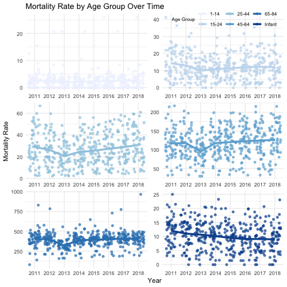
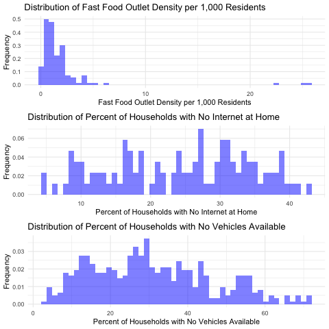
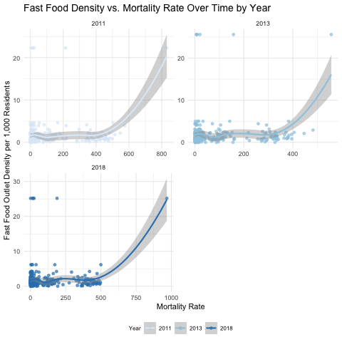
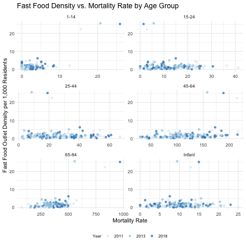
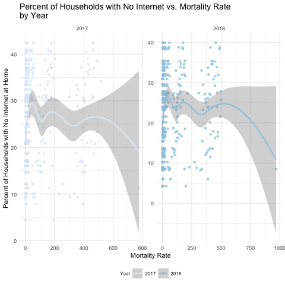
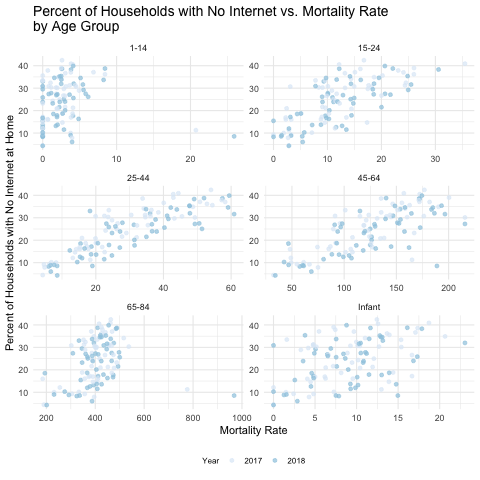
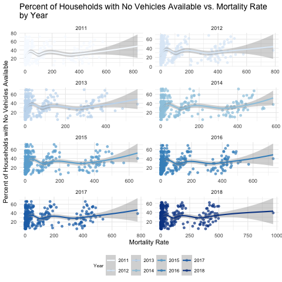
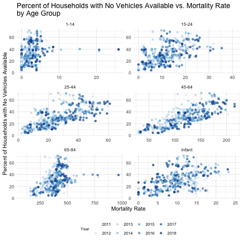

# Load libraries
library(tidyverse)
library(jsonlite)
library(dplyr)
library(ggplot2)
library(purrr)
library(sf)
library(knitr)
path = here::here()Baltimore Mortality Project Report
Introduction
This report provides a comprehensive analysis of mortality trends in Baltimore, focusing on how various socioeconomic factors, such as vehicle availability, internet access, and fast food density, affect mortality rates across different age groups. Using data from the Baltimore Health Department, spatial maps, scatter plots, and statistical visualizations were created to explore the correlations between these factors and mortality over time.
Data and Methods
The data for this analysis was sourced from Open Baltimore - a data set from the Baltimore City Health Department. Open Baltimore contains the urls for JSON files containing the data we need. Neighbourhood-specific mortality data for six different age groups (Infant, 1-14, 15-24, 25-44, 45-64, and 65-84) were collected for between 2011 and 2018. Please note that the mortality data for ages 85+ exists, but I was not able to download the full Open Baltimore.csv despite many attempts. Hence, we will demonstrate with six, rather than seven, different age groups.
We also downloaded socioeconomic data such as Percent of Households with No Vehicle Available, Percent of Households with No Internet at Home, and Fast Food Outlet Density per 1,000 Residents.
In order to reproduce this analysis, we require the following libraries:
Next, we load the JSON files that were retrieved from the urls in Open Baltimore (please see download_data.R for detailed downloading steps). After loading the data, we extract important features, such as mortality rate and transform the data to long format for visualization. An example of how this is done is below.
# Function to extract attributes from the JSON structure
extract_attributes <- function(json_data) {
map_df(json_data$features, ~ .x$attributes)
}
# Read mortality data for each age group; here we demonstrate with the 1-14 group
mortality_1_14 <- read_json(paste0(path, "/data/json/mortality_1-14.json")) %>%
extract_attributes()
# Function to reshape data to long format for plotting
reshape_to_long = function(data, age_group, prefix, value) {
data %>%
select(CSA2010, starts_with(prefix)) %>%
pivot_longer(cols = starts_with(prefix), names_to = "year",
values_to = paste0(value, "_rate")) %>%
mutate(year = as.integer(str_extract(year, "\\d+$")),
age_group = age_group)
# data$mean = rep(mean(data$morality_rate), nrow(data))
}
# Reshape data
reshape_to_long(mortality_1_14, "1-14", "mort14", "mort")
# Our final data set containing all of the long-formatted data
# is called mortality_dataData visualization
We used a variety of plots to visualize the relationships between socioeconomic covariates and mortality rates over time and across age groups. Scatter plots and trend lines were used to show correlations, and spatial maps were generated to highlight geographical variations in mortality.
Results
Mortality Trends Over Time
Figure 1 visualizes mortality rates across multiple age groups (Infant, 1-14, 15-24, 25-44, 45-64, and 65-84) from 2011 to 2018.
We notice that…
Infant Mortality: While lower than the older age groups, there are notable spikes in infant mortality, particularly in 2016.
Youth (1-14 and 15-24): These groups maintain relatively low mortality rates over time.
Older Age Groups (45-64 and 65-84): These groups consistently exhibit higher mortality rates compared to younger groups. The mortality rate in these groups shows some fluctuations, but overall, the trend remains stable over time.

Socioeconomic Covariates vs. Mortality Rates
Figure 2 shows the distributions of each socioeconomic covariate across Baltimore neighbourhoods.
Fast Food Outlet Density: The distribution is heavily skewed towards low fast food density per 1,000 residents with a few outliers.
Percentage of Households with No Internet at Home: A notable proportion of households have no internet access, with the distribution showing multiple peaks around 15-20% and 25-35%.
Percentage of Households with No Vehicles Availabile: A notable percentage of households lack vehicle access, with the median falling around 30% and some areas reaching over 60%.
# Adding covariates (fast food data) to mortality data frame
fastfd_data = reshape_to_long(fast_food[,1:5], "", "Fastfd", "fastfd") %>%
subset(select = -c(age_group))
fastfd_data$year = fastfd_data$year + 2000
fastfd_mortality_data = inner_join(mortality_data, fastfd_data,
by = c("CSA2010", "year"))
# Plot distribution of covariates
ggplot(fastfd_data, aes(x = fastfd_rate)) +
geom_histogram(aes(y=..density..), bins = 50, alpha = 0.5, fill = "blue") +
theme_minimal() +
labs(title = "Distribution of Fast Food Outlet Density per 1,000 Residents",
x = "Fast Food Outlet Density per 1,000 Residents",
y = "Frequency") 
# Relationship between Fast Food Density and Mortality
ggplot(fastfd_mortality_data, aes(x = mort_rate, y = fastfd_rate, color = as.factor(year))) +
geom_jitter(alpha = 0.7) +
geom_smooth() +
facet_wrap(~year, scales = "free", ncol = 2) +
theme_minimal() +
labs(title = "Fast Food Density vs. Mortality Rate Over Time by Year",
x = "Mortality Rate",
y = "Fast Food Outlet Density per 1,000 Residents") +
scale_color_brewer("Year", palette = "Blues") +
theme(legend.position = "bottom",
legend.direction ="horizontal",
legend.text = element_text(size = 8),
legend.title = element_text(size = 8),
plot.title = element_text(size = 14))
# Relationship between Fast Food Density and Mortality
ggplot(fastfd_mortality_data, aes(x = mort_rate, y = fastfd_rate, color = as.factor(year))) +
geom_jitter(alpha = 0.7) +
geom_smooth() +
facet_wrap(~age_group, scales = "free", ncol = 2) +
theme_minimal() +
labs(title = "Fast Food Density vs. Mortality Rate by Age Group",
x = "Mortality Rate",
y = "Fast Food Outlet Density per 1,000 Residents") +
scale_color_brewer("Year", palette = "Blues") +
theme(legend.position = "bottom",
legend.direction ="horizontal",
legend.text = element_text(size = 8),
legend.title = element_text(size = 8),
plot.title = element_text(size = 14)) Figure 3 through Figure 8 illustrate the relationships between each of the socioeconomic covariates and mortality rates, stratified by year and by age group. For each covariate, we isolated the data to years where mortality data was also reported. First, we show the distributions of each covariate.
Fast Food Outlet Density and Mortality Rate Correlation
The smoothed line in Figure 3 suggests that fast food density correlates positively with higher mortality rates, especially in the later years of the dataset. However, it is important to note that these results are greatly affected by a few extreme points. Therefore, we cannot make any conclusions about any associations.
Figure 4 shows the age group trends. Although fast food availability may be linked to poorer health outcomes in theory, these trends are not present in our data. The absence of clear trends and the presence of some extreme outliers prevent us from making any conclusions.


Home Internet Access and Mortality Rate Correlation
As shown in Figure 5, we only have internet data for 2017 and 2018. There is no dicernable trend when we stratify by year. However, we notice that the data points can be split into sections, which suggest there may be age group trends.
Figure 6 shows a clear positive trend between mortality rate and lack of home internet access, in particular for ages 15-64. The trend is less pronounced in Infant, 1-14, and 65-84 age groups.


Vehicle Access and Mortality Rate Correlation
Figure 7 shows that from 2011 to 2018, there seems to be groups of data points that have a positive correlation between the percentage of households without vehicle access and higher mortality rates. This suggests a multilevel structure to the data, and perhaps we should stratefy it by age group.
Figure 8 shows that there is indeed a positive correlation between lower rates of vehicle availability and higher rates of mortality Again, the trend is less pronounced in Infant, 1-14, and 65-84 age groups.


Spatial Distribution of Mortality Rates by Year and Age Group
Figure 9 presents spatial maps of mortality rates across Baltimore from 2011 to 2018 for different age groups. Each row corresponds to an age group, and each column to a year.
Geographical Mortality Patterns: Hotspots for mortality consistently appear in certain areas of Baltimore. For example, areas in the northern and central regions exhibit high mortality rates across different age groups. Infant mortality appears to be much higher in a few central regions than in surrounding regions.
Temporal Changes: While certain hotspots remain constant, there are areas where mortality fluctuates. Some hotspots, particularly in the infant and 15-24 age groups, appear to have decreasing mortality rates over time. Other hotspots in the 65-84 group, for example, seem to have increasing mortality rates in more recent years.
# Read in the JSON data for mortality_infant
res <- read_json(paste0(path, "/data/json/mortality_1-14.json"), simplifyVector = FALSE)
df <- purrr::map(res$features, function(r) {
if (!is.null(r$geometry) && !is.null(r$geometry$rings) && length(r$geometry$rings) > 0) {
# Loop over each ring layer and extract coordinates
rings_data <- purrr::map(r$geometry$rings, function(ring) {
do.call(rbind, purrr::map(ring, unlist)) %>%
as.data.frame(stringsAsFactors = FALSE)
})
# Combine the multiple rings into a single data frame
x <- bind_rows(rings_data)
colnames(x) <- c("lon", "lat")
x$CSA2010 <- r$attributes$CSA2010 # Include CSA2010
return(x)
} else {
return(NULL)
}
})
out <- res %>% extract_attributes()
names(df) = out$CSA2010
df = dplyr::bind_rows(df, .id = "CSA2010")
polygon <- df %>%
group_by(CSA2010) %>%
st_as_sf(coords = c("lon", "lat"), crs = 4326) %>%
summarise(geometry = st_combine(geometry)) %>%
st_cast("POLYGON") %>%
left_join(mortality_data, by = "CSA2010")
P1 = ggplot() +
geom_sf(data = filter(polygon, age_group == "Infant"), aes(fill = mort_rate)) +
facet_wrap( ~ year, ncol = 8) +
labs(x = "", y = "") +
scale_y_continuous() +
scale_fill_viridis_c("Mortality \nRate", option = "C", na.value = "grey50") +
#scale_fill_distiller("Mortality Rate", palette = "Blues") +
theme_minimal() + # Clean theme
theme(
axis.text.x = element_blank(), # Remove y-axis labels
axis.text.y = element_blank(), # Remove y-axis labels
strip.text = element_text(size = 16),# Adjust facet label size
legend.title = element_text(size = 12),
legend.key.size = unit(10, "mm"),
legend.position = "right"
)
P1_labeled <- add_labels(P1, left_label = "Infant")
Discussion
The findings highlight significant spatial, temporal, and socioeconomic disparities in mortality rates across Baltimore. Key correlations emerged between mortality and the availability of vehicles, internet access, and fast food density, particularly among older age groups.
The socioeconomic associations with mortality rates can motivate important public health considerations. Although fast food density appears to have little association with mortality rate, there are clear associations between lower rates of home internet access and vehicle availability with higher mortality rate. The trend is less clear in infant and 1-14 age groups, potentially because these populations are less likely to rely on internet and vehicles in their daily life. Furthermore, these populations have very low mortality rates. Primary drivers of youth mortality may be due to issues other than the socioeconomic covariates we tested. Furthermore, in the 65-84 population, the associations are also less apparent. This can be, in part, explained by the fact that health conditions related to old age may have a stronger impact on mortality rates than socioeconomic conditions.
Some limitations of the study include that this analysis relies on correlation data and cannot make causal inferences. Further research should explore causal pathways and investigate additional socioeconomic factors that may contribute to the observed disparities in mortality.
This analysis highlights the complex interplay between socioeconomic factors and mortality rates across Baltimore. By focusing on both geographic and temporal trends, we have identified critical areas where public health interventions may be most effective in reducing mortality rates and addressing health disparities.